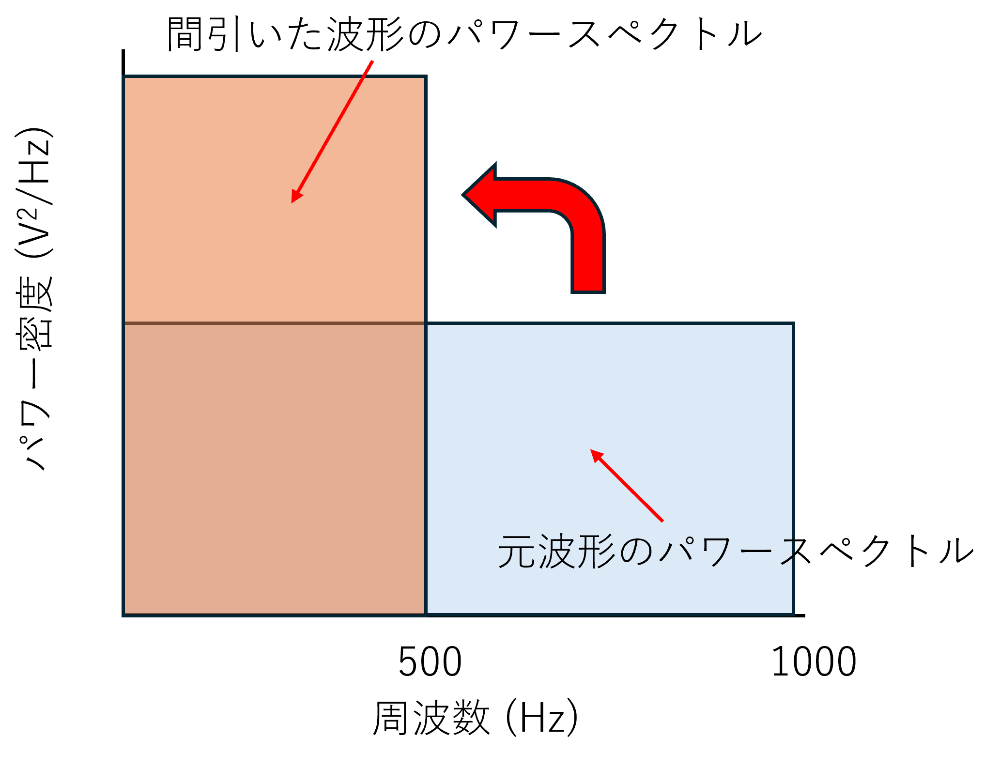
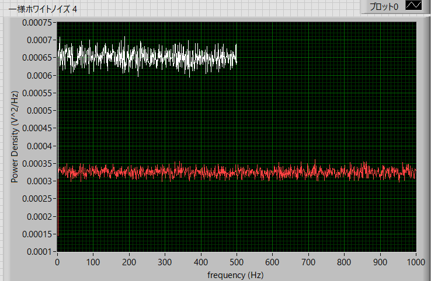
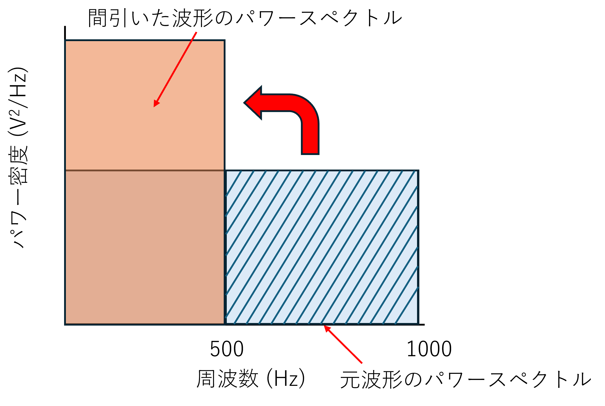

パワースペクトルの実際の作業内容-08
間引いたらどうなる？
前ページに述べましたように，
分散値は間引いても変わらない
というのは，当然であって，分散の定義から，
\(\Large \displaystyle <x^2> = \sum_{i=1}^n \frac{(x_i - <x>)^2}{n-1} \)
からデータ数に依存しないパラメータです．
間引いたデータをフーリエ変換にかけると何が変わるかというと，
前ページのように，仮に，ひとつずつデータを間引くとすると，
\(\Large \displaystyle S_{freq\_D} = \frac{1}{2} S_{freq} \)
となるので，フーリエ変換による周波数の範囲が，
\(\Large \displaystyle f_{range} = \frac{S_{freq}}{2} \)
\(\Large \displaystyle f_{range\_D} = \frac{S_{freq\_D}}{2} = \frac{S_{freq}}{4}\)
\(\Large \displaystyle S_{freq\_D} = \frac{1}{2} S_{freq} \)
と半分になるのです．
ここで，パワースペクトルのグラフからは，ここ，に記したように，
\(\Large \displaystyle <x^2> = \int_{- \infty}^{\infty} \Phi (\omega) \ d \omega \)
となります．つまり，
周波数帯が半分になっても分散値は同じ ＝ パワー密度が倍になる
という点です．図示すると，

つまり，
間引くと，高周波領域のノイズが低周波領域に乗っかり，低周波領域のパワー密度が増える
ことになります．これ，”エイリアシング”，ですね．
せっかくパワースペクトルを計算してノイズを計測しようとしても間引くと計算結果が変わる（増える）わけです．
これでは困ります．上手のように長方形なら半分にすればいいものですが，実際にはホワイトノイズ以外も扱うのでそう簡単にはいきません．
では，実際に間引いたあとのパワー密度を見てみると，
元データ
一様ホワイトノイズ
実際の波形の時間 (s) ： Stime = 1.028 s
サンプル周波数 (1/s) ： Sfreq = 2,000 kHz
サンプル時間分解能 (s) ： dt = 0.0005 ms
実際の波形の数 ： n = 2048
間引き方 ： 1/2
加算平均 ： 1000回

となります．赤が元波形，白が一つずつ間引いた波形．わかりやすいように，両軸ともリニアでプロットしています．
やはり，間引くと，パワー密度が倍になっています．
どうしたらいいのでしょう？解決策は，
高周波領域のノイズをなくしてしまえばいい！
です．

つまり，上図のハッチの部分の高周波領域のノイズをあらかじめなくしておけば，間引いたとしても低周波領域に乗っかってくるノイズ成分がないので元のままとなります．
この役目を担ってくれるのが，”ローパスフィルタ”，です．